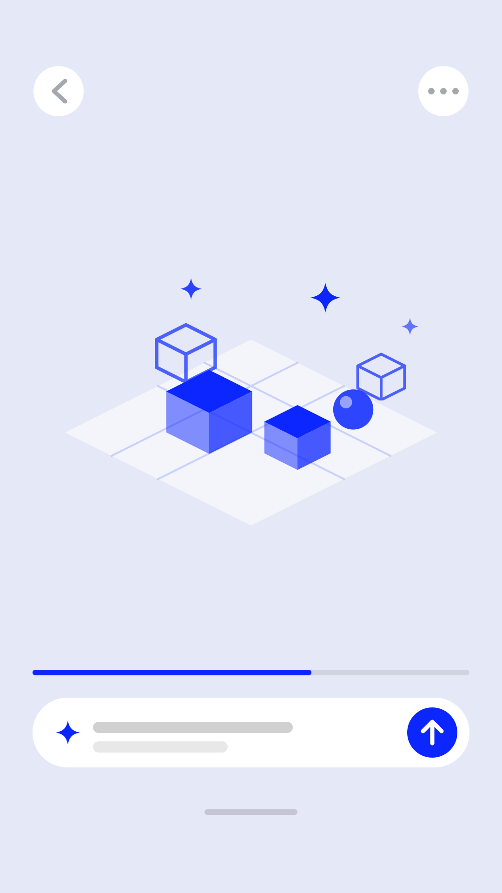
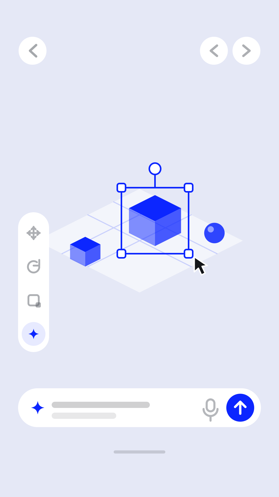

UNI
An app for crafting small 3D worlds with AI, and playing what the community builds.
Every kind of world
Open UNI and you're in a feed of worlds made by the community. A racing game? A place to hang out? A store you can actually walk through and shop in?
If you can imagine it, someone can build and share it.
Meet UNI's AI builder
Describe the world you want in one sentence. UNI's AI builder creates it while you watch.

Then shape it
Move things by hand if you want to. Or just tell the AI what to change. Keep going until it matches the world you pictured.

Publish in a tap
When it feels right, put it in the feed. People start walking through it right away.
Why we made UNI
Building a virtual world used to mean pro tools and weeks of work. Creative people didn't need the skills. They needed the barrier gone.
What we are building toward
AI removes the labor and the knowledge. What's left is taste.
A minute in UNI gets you a world that actually looks stunning, whether or not you've ever built anything.
Who it is for
Someone who has ideas but isn't a developer or an artist, and shouldn't have to be.
Someone who opens UNI because it's fun, and stays because what they make gets played.
UNI is in development at Fortune Kid Inc.
If you'd like to see where it is, we're happy to talk.
contact@fortunekidstudio.com